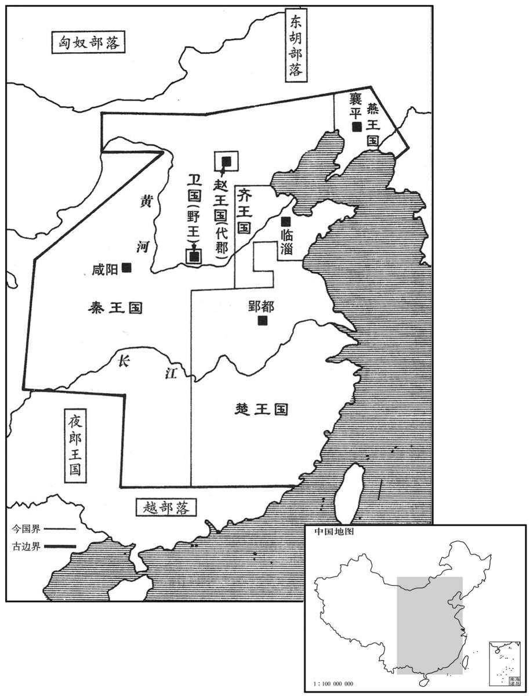
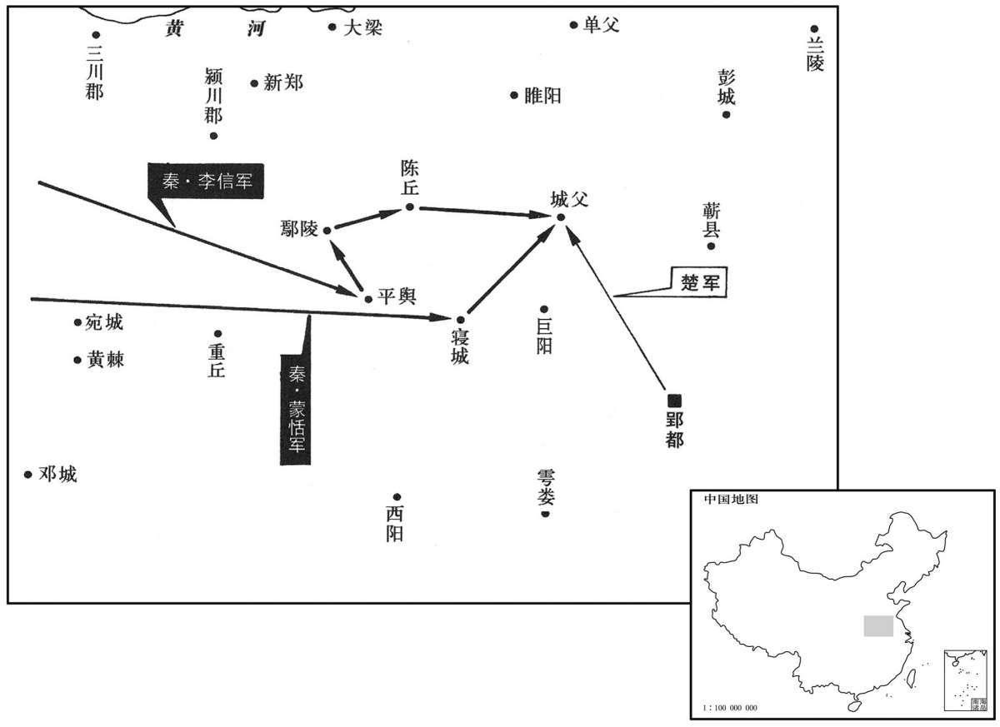

公元前225年资治通鉴：本年记事、原文与白话对照
按原书编年位置阅读；追叙和史论不等于本年发生的事件。白话采用所据译本，缺译不以生成译文补齐。
卷7 · 本年记事
公元前225年 · 始皇帝在位第22年
二十二年〔（丙子、前二二五）〕
本年事件索引（现代整理）

本年形势与背景参考图

本年形势与背景参考图
王贲伐魏，引河沟以灌大梁。〔班志：陈留郡浚仪县，故大梁，狼汤水所经也。水经：渠水出荥阳北河，东南流至浚仪县。注云：始皇使王贲攻魏，断故渠，引水东南出以灌大梁，因谓之梁沟。〕三月，城坏。魏王假降，杀之，遂灭魏。〔降，户江翻。〕
秦将王贲率军征伐魏国，引汴河的水灌淹魏国都城大梁。三月，大梁城垣塌毁，魏王魏假投降，为秦军杀死。魏国灭亡。
本段人物：王贲
王使人谓安陵君曰：“寡人欲以五百里地易安陵。”安陵君曰：“大王加惠，以大易小，甚幸，虽然，臣受地于魏之先王，愿终守之，弗敢易！”王义而许之。
秦王嬴政遣人去通知安陵君说：“我想要用五百里的土地换你的安陵国。”安陵君说：“大王您施加恩惠给我，用大换小，真是太幸运了。但虽然如此，我这小国的土地是受封于魏国上代国君的，我愿意终生守护它，不敢交换！”秦王嬴政赞许他奉守道义，便应允了他的请求。
李信攻平舆，〔班志：汝南郡有平舆县，春秋沈子之国。舆，音预，史记正义读如字。〕蒙恬攻寝，〔班志：汝南郡有寝县。应劭曰：孙叔敖子所邑之寝丘是也；世祖更名固始，徐广曰：寝，今固始寝丘。师古曰：寝，子衽翻。刘仲冯曰：据后淮阳国已有固始，此寝疑自别地。余谓郡县离合无常，盖后来并寝入固始也。杜佑曰：颍州治汝阴县，有寝丘，秦蒙恬攻寝即此。〕大破楚军。信又攻鄢郢，破之。〔此鄢郢非楚故都之鄢郢也。楚故都为白起所取，秦已置南郡。据楚都寿春，以寿春为郢，则其前自郢徙陈，亦必以陈为郢矣。然则此郢乃陈也。鄢即颍川之鄢陵，与平舆、城父地皆相近。或曰：“鄢郢”当作“鄢陵”。〕于是引兵而西，与蒙恬会城父。〔班志，沛郡有城父县。索隐曰：在汝南即良乡。史记正义曰：言引兵而会城父，则是汝州郏城县东父城者也。括地志：汝州郏城县东四十里有父城故城，即服虔云“城父，楚北境”者也。又许州叶县东北四十五里亦有父城故城，即杜预云“襄城，城父县”者也。此二城，父城之名耳，服虔城父是误也。左传及水经注云：楚大城城父，使太子建居之。十三州志云：太子建所居城父，谓今亳州城父，是也。此三家之说，是城父之名。班志云，颍川父城县、沛郡城父县，据县属郡，其名自分。〕楚人因随之，三日三夜不顿舍，大败李信，入两壁，杀七都尉；〔此郡都尉将兵从伐楚者也。秦列郡有守，有尉，有监，然秦、汉之制，行军亦自有都尉。败，补迈翻。〕李信奔还。
秦将李信进攻平舆，蒙恬攻击寝，大败楚军。李信再攻鄢郢，攻克了该城，于是率军西进，到城父与蒙恬的队伍会合。楚军趁机尾随在后，三天三夜不停宿休息，反击中大败李信的军队，攻入秦军的两个营地，斩杀了七个都尉。李信率残部逃奔回秦国。
本段人物：李信
王闻之，大怒，自至频阳谢王翦曰：“寡人不用将军谋，李信果辱秦军。将军虽病，独忍弃寡人乎！”王翦谢：“病不能将。”王曰：“已矣，勿复言！”〔将，即亮翻。复，扶又翻。〕王翦曰：“必不得已用臣，非六十万人不可！”王曰：“为听将军计耳。”于是王翦将六十万人伐楚。王送至霸上，〔应劭曰：霸上，地名，在霸水上，在长安东三十里。霸水，古之滋水，秦穆公更名。〕王翦请美田宅甚众。王曰：“将军行矣，何忧贫乎！”王翦曰：“为大王将，有功，终不得封侯，故及大王之向臣，以请田宅为子孙业耳。”王大笑。王翦既行，至关，〔此当是出武关也。〕使使还请善田者五辈。或曰：“将军之乞贷亦已甚矣！”〔贷，与貣同，吐得翻，从人求物也。〕王翦曰：“不然，王怚中而不信人。〔史记注：怚，音麤。徐广曰：一作“粗”。〕今空国中之甲士而专委于我，我不多请田宅为子孙业以自坚，顾令王坐而疑我矣。”
秦王嬴政闻讯，暴跳如雷，亲自前往频阳向王翦道歉说：“我没有采用将军你的计策，而李信果然使秦军蒙受了耻辱。现在将军你虽然患病，但难道就忍心抛下我不管吗？！”王翦仍推辞道：“我实在病得不能领兵打仗了。”秦王嬴政说：“好啦，不要再这么说了！”王翦说：“如果不得已一定要用我的话，非用六十万人的军队不可！”秦王嬴政答道：“就听从将军你的主张行事吧。”于是王翦率领六十万大军征伐楚国，秦王亲自送行到霸上。王翦请求秦王赏赐他相当多的良田美宅。秦王说：“你就出发吧，为什么还要担心日后贫穷呀！”王翦说：“身为大王您的将领，虽立下战功，但最终仍不能被封侯，所以趁着大王现在正看重我，请求赏赐田宅，好为子孙留下产业啊。”秦王嬴政听后大笑不止。王翦率军开拔，抵达武关，又陆续派遣五位使者向秦王嬴政请求赏赐良田。有人说：“将军您向秦王求讨东西也已是太过分了吧！”王剪答道：“不是这样。大王心性粗暴而多猜忌，如今将国中的武装士兵调拨一空，专门托付给我指挥，我若不借多求赏赐田宅为子孙谋立产业，表示坚决为大王效力，大王反倒要无缘无故地对我有所怀疑了啊。”
本段人物：王翦